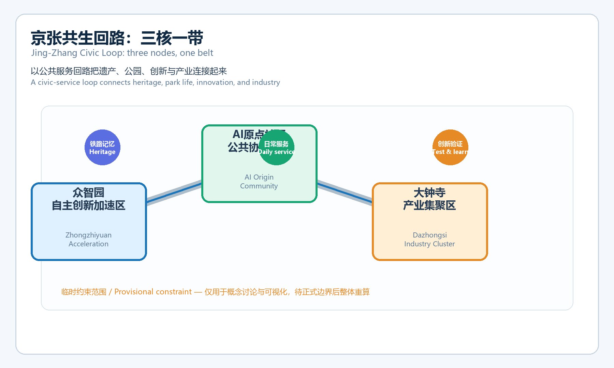
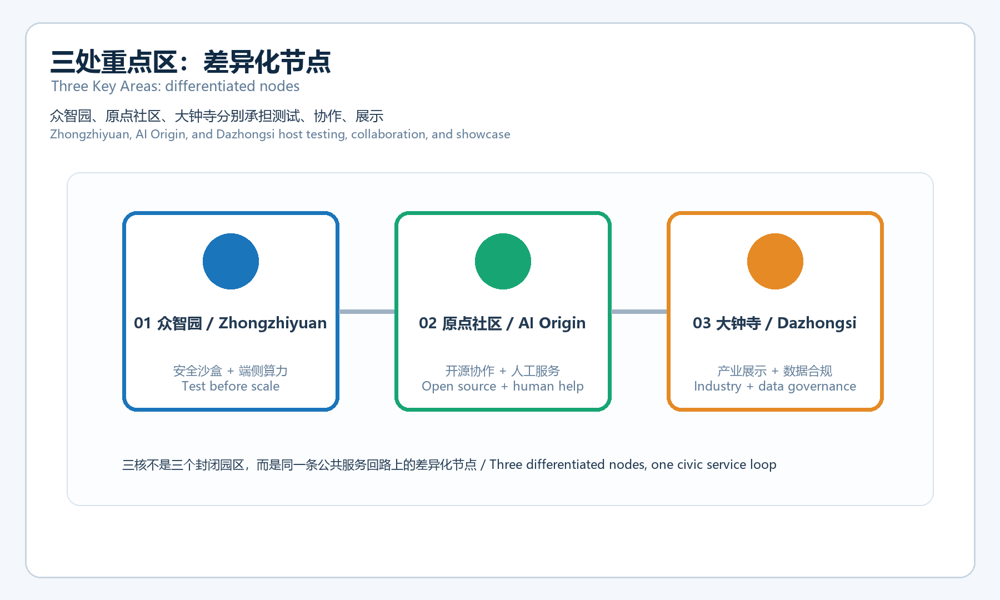
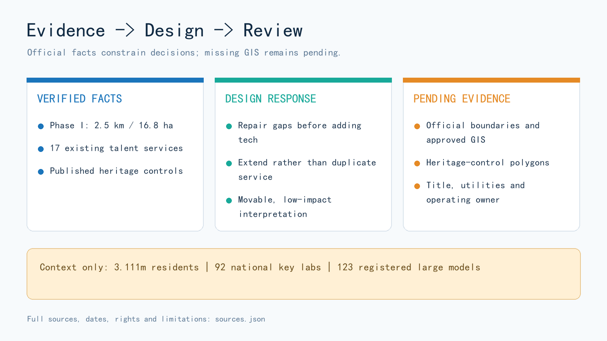

Jing-Zhang Civic Loop: an AI innovation belt for everyday public services
Translate the self-built spirit of the century-old railway into an AI civic-service loop that people can enter, leave and challenge.
Jing-Zhang Civic Loop: an AI innovation belt for everyday public services
0. One-sentence proposition
This proposal does not treat AI as a decorative “smart layer.” It organises AI as an everyday civic-service loop: continuous passage, human explanation, a no-account alternative, exit and appeal come first; explainable AI assistance comes second. Jing-Zhang Railway Heritage Park is the civic spine. Zhongzhiyuan, Beijing AI Origin Community and the Dazhongsi AI cluster are three differentiated nodes connected by blue-green walking, cycling and public-service transfers. Source Source Depth
This is a concept and reference scheme. It is not a statutory plan, government approval, construction permit, investment commitment, procurement plan or operating authorisation. The public package does not contain official SITE_BOUNDARY or KEY_AREA polygons, so all submitted geometry is provisional and must be replaced and recalculated when official data arrives. Spatial data Spatial data Metric

1. Evidence base, limits and scope
Facts, inferences, design recommendations and items awaiting professional confirmation are kept separate. Registered official facts enter sources.json and metrics.json; design judgements remain in the narrative and matrices; missing statutory boundaries, ownership, utilities, heritage GIS and delivery responsibility remain in assumptions.json. Provisional geometry supports concept comparison and package checks only. Source Source
1.1 New official facts and their design consequences
| Evidence type | Verified fact | Design response | Explicit non-inference |
|---|---|---|---|
| District statistics | At end-2025 Haidian reported 3.111 million residents, 92 national key laboratories and 123 registered large models; the bulletin marks 2025 figures as preliminary. Source | Make services legible to residents, researchers, founders and mobile talent, with universal and human-assisted access. | Do not allocate district totals to the provisional site or use them to forecast users, floor area or returns. Metric |
| Existing park | Phase I of Jing-Zhang Railway Heritage Park, from Qinghua East Road to Zhichun Road, was reported as 2.5 km and 16.8 ha, with heritage retention, functional stitching and public-space goals. Source | Plug into and repair an existing civic spine; audit breaks, entrances, rest points and service gaps before adding technology. | Do not combine Phase I area with the provisional proposal area or label unopened segments as complete. Metric |
| Planning procedure | A street-level regulatory-plan draft was displayed from December 2024 to January 2025. The response notice records revised or still-to-be-detailed road-junction treatment. Source | Treat major crossings as connectivity problems with alternative interfaces, not approved bridges, tunnels or redlines. | Do not treat the consultation response as the approved plan or reverse-engineer legal boundaries from webpage text. [assumption:A-CONTROL-PLAN-006] |
| Existing service | AI Origin Community has a mobile talent-service station covering 17 high-frequency items, digital Q&A and human service officers. Source | Extend the existing service with no-account access, quiet waiting, paper guidance, referral and failure review rather than duplicate it. | Do not claim the 17 services as proposal outputs or assume capacity, hours or system access. Metric |
| Heritage control | The Beijing Municipal Cultural Heritage Bureau publishes protected and construction-control zones for the former Qinghuayuan Station, including restrictions on unrelated new construction. Source | Turn the “First Railway” landmark into a movable, low-impact interpretation route; fix no new site near the station before official heritage GIS screening. | Do not digitise textual offsets as an authoritative polygon or propose excavation, fixed equipment or structures. [assumption:A-HERITAGE-005] |
| Walking and greenways | Beijing’s programmes emphasise continuous walking/cycling rights, accessibility, shade and water-road-green integration. Source Source | Audit six essentials first: network breaks, crossings, shade, tactile-paving conflict, stopping places and non-AI wayfinding. | Do not present citywide guidance as an approved site project or substitute it for professional road, landscape or accessibility design. |
Where an official webpage shows no explicit open-reuse licence, this package uses short factual paraphrases and links only. It copies no source photograph, map, logo or interface asset. [assumption:A-RIGHTS-008]
1.2 Three connected scales
| Scale | Publicly described magnitude | Spatial judgement in this proposal | Evidence still required |
|---|---|---|---|
| Coordinated study area | about 43.6 km² | Link universities, firms, compute, talent, culture and civic services as an innovation network | official study boundary and current industry/transport base data |
| Overall urban-design area | about 11.4 km² | Use the heritage park as a civic spine for renewal, industry services and blue-green mobility | official boundary, ownership, utilities and road data |
| Key areas | about 368.4 ha across three areas | Differentiate safe testing, open collaboration and industry-facing service | three official polygons plus heritage and statutory controls |

2. Overall concept, naming and identity
“Jing-Zhang” keeps the memory of railway engineering and regional connection. “Civic” centres public value. “Loop” requires every service to have an entrance, alternative path, human handoff, stop condition and feedback route. The spatial identity is one civic spine, three nodes, two collaborative wings and multiple small scenarios. The visual identity is a line that can return to its origin and three open nodes, using deep blue, cyan-green, warm orange and paper white. It uses no third-party logo, portrait or unauthorised railway imagery. Source
The three positionings are a century-old Jing-Zhang cultural belt, an urban AI living-experience belt and an AI-integrated innovation belt. The five functions are full-stack independent innovation, a global AI ecosystem, AI+ scenario enablement, an AI-enabled liveable city and globally relevant AI governance. AI Origin Community leads open collaboration; Zhongzhiyuan leads independent innovation and controlled testing; Dazhongsi provides industry-facing service and public explanation; the two wings connect science services and Xiaoyue River everyday scenarios.
3. Coordinated study: innovation ecosystem and future city
The ecosystem is organised by capability, spatial carrier and public return—not by unverified rankings, company lists or investment claims. Its elements are research, open-source collaboration, compute and data, product and industry services, daily talent life, civic scenarios and international exchange. Standard
3.1 Five global cases: transferable method and non-transferable context
| Official case | Transferable method | Application here | Not imported |
|---|---|---|---|
| Punggol Digital District, Singapore | Co-locate academia, industry and community with an open digital test platform. Source | Zhongzhiyuan testing requires authorisation, isolation, purpose limits and a stop path. | Sensor scale, platform governance, finance and operations. |
| Barcelona 22@ | Embed innovation, creative production, care and urban technology in a lived-in district. Source | Dazhongsi ground floors combine industry explanation with public service and accessible space. | Barcelona planning instruments, land economics, brands and quotas. |
| Amsterdam Nieuwe Meer | Combine transit, housing, work, services, knowledge institutions and digital infrastructure. Source | Connect the three nodes by transit and walking, and treat daily services as innovation infrastructure. | Amsterdam’s local programme ratios and controls. |
| Cambridge Kendall Square / Volpe | Plan research, housing, community facilities, pedestrian links and open space together after engagement. Source | Make public space and community benefit preconditions for every test project. | Approved quantities, real-estate agreements and funding. |
| Paris-Saclay Gif-sur-Yvette | Combine research and education with housing, neighbourhood services, parks, public space and district infrastructure. Source | Test each key area for research, daily life, public realm and infrastructure together. | French statutory procedures, transit schedules and delivery institutions. |
Across the cases, innovation must be usable in everyday life; testing needs governance and exit; public space, mobility and community services should be designed with research facilities. The cases do not prove equivalent institutions, budgets, data or delivery capacity in Haidian.
The proposed structure is one civic spine + three innovation nodes + two collaborative wings + ten reusable scenarios. Every service uses an evidence card recording user, purpose, data boundary, non-AI alternative, stop condition and review owner.
4. Overall urban design: renewal, land, buildings and infrastructure
The 1–2 km urban scale is treated as a civic-service loop, not as isolated AI compounds. Land use, buildings, roads, green space, public space and phasing layers show spatial relationships. FAR, height, setbacks, redlines, ownership and utilities remain unknown. Metric
4.1 Land use and retain/renovate/demolish logic
The land-use concept combines civic innovation, blue-green mobility, community life, industry service and retain/renew nodes. It does not create another closed campus. Buildings follow “retain first, reversible retrofit, cautious new build, demolition pending evidence.” No demolition or height conclusion is made without title, structure, heritage and statutory data. Spatial data Spatial data
4.2 Mobility and blue-green public space
Continuous passage comes first. Rail transfers, ring-road crossings, community entrances and industry-service nodes form a walking and cycling network. The first audit covers breaks, crossings, shade, tactile-paving conflict, stopping places and non-AI wayfinding. AI navigation may explain options but never replaces signs, human help or accessible passage. Source Spatial data
The heritage park, Xiaoyue River, community open spaces and industry edges form a connected blue-green loop with shade, seating, quiet wayfinding and staffed help points. Water-road-green continuity is a review criterion. The public realm is not a “screen plaza”; it remains useful without AI. Source Spatial data Spatial data

4.3 Municipal and digital infrastructure
The reference principle is edge-first, tiered compute, auditable public interfaces and graceful offline operation. Low-risk information uses local cache; any data exchange is purpose-limited and logged. No camera, voice collection or production-system link is proposed without site authority. Energy, fire, communications, drainage, compute and plant rooms require professional verification. Depth
5. Three key areas

5.1 Zhongzhiyuan: test before scaling
Zhongzhiyuan is a controlled sandbox for trustworthy testing and edge compute: bookable test rooms, low-disturbance explanation space, maintenance and human help, and shared validation for university and start-up teams. Every test needs authority, time limits, a data list, stop conditions and human review. No compute supply, investment, tenant or procurement commitment is implied. Spatial data
5.2 Beijing AI Origin Community: participation in ordinary life
The Origin Community is a civic living room for open-source release, resident feedback and intergenerational collaboration. Since a talent-service station already covers 17 high-frequency items with digital and human support, the proposal extends rather than duplicates it: no-account terminals, paper guidance, quiet waiting, complex-case referral, workshops and reversible trials. People may decline AI or request human explanation. Source Spatial data
5.3 Dazhongsi: industry display as a public interface
Dazhongsi is an interface for industry service, explainable data governance and international exchange. Auditable case galleries, an enterprise-service desk, a talent meeting place and transit-linked public space create an open ground floor. Every company case, brand, product, dataset and partnership requires rights clearance; none is presented as a confirmed tenant or investment outcome. Spatial data
6. AI+ scenario cards, user profiles and validation
6.1 Ten scenario cards
1. Open-source release hall — publish code, model notes and failure reviews; collect no identity trail. 2. Trustworthy test sandbox — show protocol, red-team result and stop condition; connect to no production system. 3. Edge-compute station — offer low-risk local inference; retain ordinary information when offline. 4. AI slow-mobility guide — offer multilingual, low-stimulation routes; retain paper maps and human directions. 5. Heritage oral-history workshop — use authorised contributions; never label synthetic voices as archival originals. 6. Qinghe low-carbon learning corridor — explain drainage, shade, cycling and energy; make no invented performance claim. 7. Research-transfer station — connect university work with professional help; promise no patent, finance or transfer outcome. 8. Data-governance living room — explain consent, purpose and audit; display no personal or sensitive data. 9. Community service sample street — keep life services small-scale and human-processable; require no QR code. 10. Global AI civic route — link the three nodes with public programmes; dates and participants remain unconfirmed.
6.2 Five user profiles
Open-source developers need reproducible collaboration; start-ups need low-cost testing and human compliance help; residents need mobility, leisure and a non-AI option; university communities need transfer and quiet learning; established firms and international visitors need auditable display, transit access, human reception and clear public rules. These profiles are design tools, not population findings.
6.3 Three industry tests
- T1 civic-service accessibility: compare AI guidance, paper signs and human explanation using anonymous aggregates; pause if any group cannot complete the task.
- T2 edge model and low-carbon operation: compare local operation, delay, energy and recovery as a proof of concept only.
- T3 data authorisation and industry display: use cleared synthetic data to demonstrate permission, withdrawal and audit; never imply compliance certification.
7. AI public space, pilgrimage landmarks and culture
The three conceptual landmarks are the First Railway memory route, using movable low-impact interpretation; the Collective Correction code wall, displaying authorised open-source contributions and failure reviews; and the Return-to-Origin civic-loop square, connecting the nodes and annual programmes. The former Qinghuayuan Station has published heritage-control requirements but no official GIS in this package, so no new structure, fixed equipment or excavation is sited near it before heritage overlay and authority review. Source [assumption:A-HERITAGE-005]
The cultural narrative moves from Zhan Tianyou and independent railway engineering, through Zhongguancun’s open innovation, to public co-creation in the AI era. It does not recreate people, companies, voices or community stories without rights. Every exhibit can be understood without scanning, registration or data provision.
8. Projects, governance, activities and phasing
Reference work packages are: JZ-01 repair mobility breaks; JZ-02 Zhongzhiyuan–Qinghe innovation edge; JZ-03 Origin Community research-transfer street; JZ-04 Dazhongsi four-quadrant connections; JZ-05 civic-service and edge-compute nodes; JZ-06 global AI civic route. These are review packages, not approved projects.
Long-term programmes include quarterly Problem Season, quarterly Open-source Season, annual City Beta Season and annual Proof Week. Ordinary days, quiet periods and failure states are designed as carefully as festivals.
- P0 evidence and authority: obtain official boundaries, ownership, heritage, transport, utilities and operating responsibility.
- P1 lightweight civic experience: paper wayfinding, human help, reversible exhibits and open discussion.
- P2 controlled validation: run T1–T3 only after professional and rights-holder approval, with pause, appeal and incident review.
- P3 deepen or retire: retain long-term infrastructure only when evidence shows public value; otherwise preserve learning and retire the function.
phasing.geojson expresses sequence only, not dates, budget, owner or commitment. Spatial data
9. Metrics, recalculation and compliance
Within the provisional geometry, the submitted area recalculates to about 11,412,825 m²; green-space ratio is about 12.34%; public-space ratio is about 7.33%; and there are three key areas. These values describe only package geometry and are not statutory planning indicators. Metric Metric
Six official context metrics are recorded separately: Haidian population, national key laboratories and registered large models; Phase I park length and area; and high-frequency talent-service items at Origin Community. They explain the need for mixed public service, real testing and connection to existing services. They do not size land, buildings, users or performance. Metric Metric Metric [assumption:A-CONTEXT-007]
metrics.json records status, value, unit, formula, source files, confidence and assumptions. The compliance, standard and design-depth matrices connect announcement requirements to report sections, layers, metrics, drawings and review checks. Replacing official boundaries requires coordinated updates to geometry, metrics, figures, PDFs, HTML, matrices and manifest hashes. Depth

10. Risk, copyright and next actions
The largest risk is precision theatre caused by provisional boundaries and missing base data. Other risks are treating concept services as deployed, generated figures as existing conditions, and proposed partners or programmes as commitments. Mitigation is explicit provisional styling, recalculable formulas, human and non-AI paths, stop/appeal/retirement rules, and professional review of roads, utilities, title, heritage, fire, accessibility, data security and operations. Spatial data
This package uses no personal data, private map, unauthorised corporate mark, portrait, voice, music or third-party image. Its figures, HTML, GeoJSON and PDFs are proposal artefacts and do not represent official positions.
References
Primary local evidence comes from official Haidian/Beijing statistics, landscape, planning, transport, heritage and human-resources pages. Comparative cases come from official Singapore, Barcelona, Amsterdam, Cambridge and Paris-Saclay project pages. Complete titles, dates, retrieval dates, use and rights limits are recorded in sources.json. Source Source Source
11. Submission status
The target remains package_type=professional_design_package, package_state=ready_for_review, proposal_format_version=2 and bilingual_contract_version=1. A merged GitHub PR would not constitute professional approval, service launch or implementation authorisation. Source